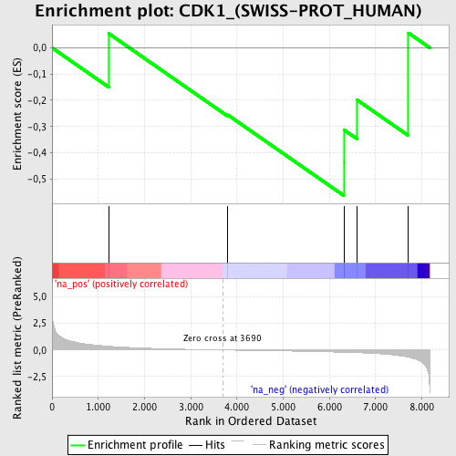
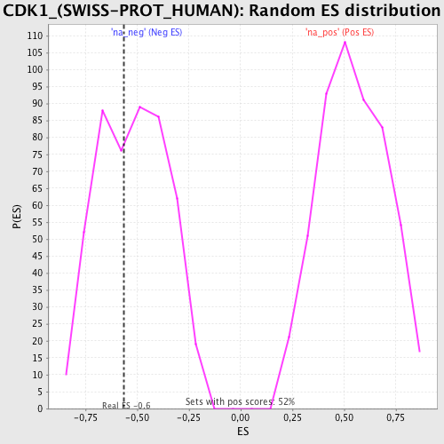

| | | Dataset | 52288 |
| Phenotype | NoPhenotypeAvailable |
| Upregulated in class | na_neg |
| GeneSet | CDK1_(SWISS-PROT_HUMAN) |
| Enrichment Score (ES) | -0.56323403 |
| Normalized Enrichment Score (NES) | -1.0825429 |
| Nominal p-value | 0.41493776 |
| FDR q-value | 1.0 |
| FWER p-Value | 1.0 |
Table: GSEA Results Summary

Fig 1: Enrichment plot: CDK1_(SWISS-PROT_HUMAN)
Profile of the Running ES Score & Positions of GeneSet Members on the Rank Ordered List

Fig 2: CDK1_(SWISS-PROT_HUMAN): Random ES distribution
Gene set null distribution of ES for CDK1_(SWISS-PROT_HUMAN)